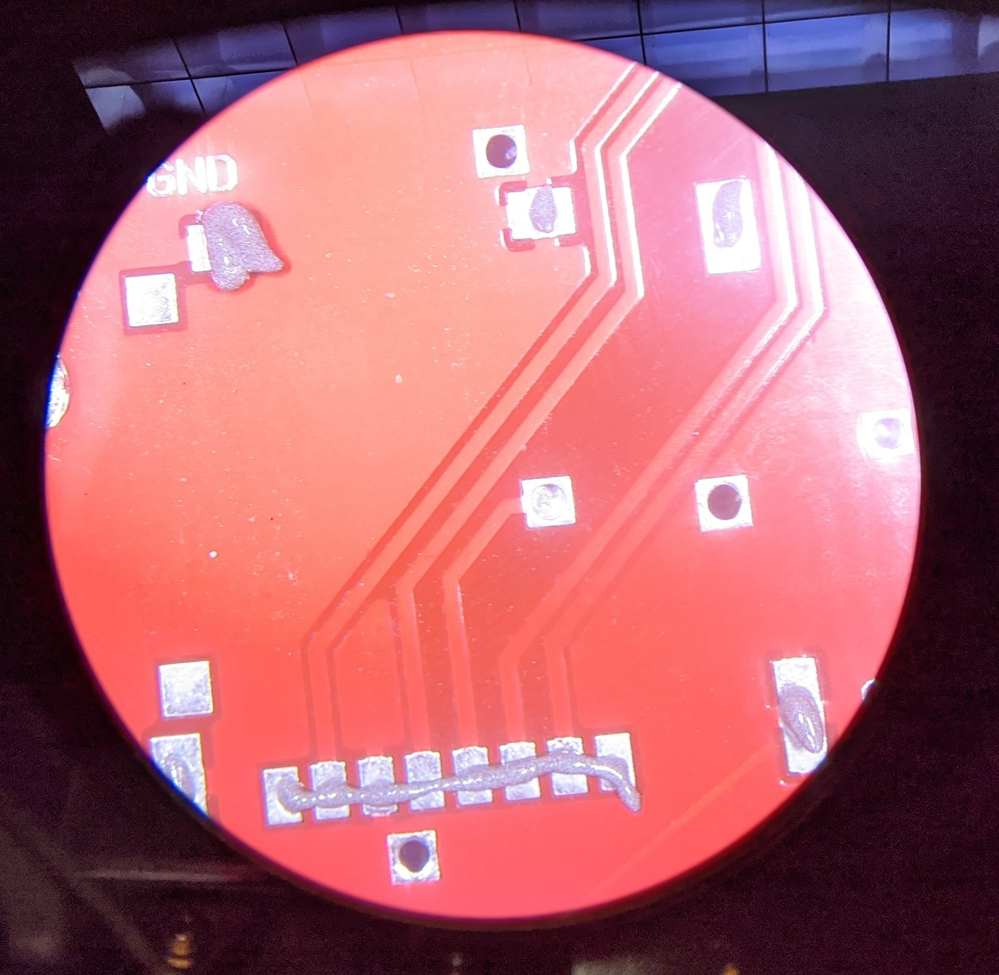

EENG 383
Sodlering SD card to development boardAttach SD card holder to development board
The SD card holder is purely a mechanical device that holds an SD card and connects the conductive fingers on the SD card to pins on the PIC. I have found making the solder connection by "reflowing" solder paste with a soldering iron to be the most effective way to connect the SD card holder to the development. This technique of "reflowing" solder paste with the soldering iron is useful in a range of repair and fabrication processes and well worth trying out today.So follow along with these steps and you should find the process quick and efficient.
- Step 1
Start by getting a solder paste dispense gun, a tube of solder paste, and a paper towel or something to clean up excess solder paste. Turn the development board over on its back and orient the programming header to the right. The development board in the image below is orientated this way. In this orientation, the SD card holder is positioned on the bottom edge of the development board.
Apply solder paste to the pads shown shown in the image below. Try to apply about the same amount as shown. It's easier to add more solder paste later, than it is to remove solder later.

- Step 2
This is the most important step, align SD card holder on development board. This is a bit tricky to get right because the "fingers" on the SD card holder are somewhat inside the outline of the SD card holder. Make sure that you have all the SD card holder fingers and tabs aligned with shiny spots on the development board just like the image below.

- Step 3
Reflow the solder paste with the soldering iron onto the "fingers" of the SD card. Start by soldering one of the fingers on either the left or right end of the set of fingers. Do this by carefully positioning the chisel tip of the soldering iron at the end of the silver pad (furthest from the SD card finger) and slowly move the soldering iron's chisel tip towards the SD card finger. The solder paste will quickly transform into a smaller ball of solder which you will slowly push towards/on the SD card finger. When the ball of solder meets the SD card finger, the solder should wick onto the pin and join the development board pad with the SD card finger. If this doesn't work, try to solder the adjacent pin.
When you have one pin soldered on one side of the set of finger, check the alignment of the SD card holder before proceeding. If the SD card is crooked, take a moment to heat up the solder on the one pin and fix the orientation of the SD card holder so that it aligns with the land pattern (silver pads) on the PCB.
With one pin soldered and the SD card holder orientated on top of the development board land pattern (silver pads), then solder one of the SD card fingers on the other end of the SD card holder.
Check alignment of the SD card holder then continue to solder the remaining SD card fingers. Make sure that you have a good electrical connection between all the fingers and the silver pads on the development board.

Note, that the 4th pin from left looks like it needs some more solder. - Step 4
Solder at least two of the SD card tabs to the development board. The tabs are the mechanical connection between the SD card and the development board. When you push the card into the holder all that sheer stress is being placed on the tabs around the exterior of the SD card holder. It's worth the time to make extra sure that these connection are well made.
I find this solder operation to be tricky because the solder seems to want to stick to the SD card holder tabs and not to flow onto the development board and make the needed connection. I almost always need some extra solder to make a good connection. Be careful not to overdue it with too much solder or too much time on any one tab. If you are having a hard time with one tab, move to another and let this one cool down.

Firmware Organization
You will need to download some firmware to test the SD card. To do this, follow these instructions.- In the INTERNAL OSCILLATOR area of the System Module window
- Oscillator Select: Internal oscillator block
- System Clock Select: FOSC
- Internal Clock: 16MHz_HFINTOSC
- Software PLL Enabled: Check
- In the Device Resources area of the project window, expand the Timer option. Double click TMR0,
- In the Device Resources area of the project window, expand the EUSART option. Double click EUSART1 [PIC10/PIC12/…],
- In the Device Resources area of the project window, expand the MSSP option. Double click MSSP2 [PIC10/PIC12/…].
- In the Project Resources area of the project window click on TMR0.
- Enable Timer: ✓
- Enable Prescaler: □
- Prescaler: 1:2 <Doesn't matter>
- Timer mode: 16-bit
- Clock Source: FOSC/4
- Timer Period: 100µs
- Enable Timer Interrupt ✓
- Still in the TMR0 configuration, click on the "Registers" tab
- Change the "TMR0H" text box to 0x0
- Change the "TMR0L" text box to 0x0
- Do not try and modify the Requested Period value in the "Easy Setup" tab.
- In the Project Resources area of the project window click on EUSART1.
- Enable EUSART: ✓
- Enable Transmit: ✓
- Enable Wake-up: □
- Auto-Baud Detection: □
- Enable Address Detect: □
- Baud Rate: 9600
- Transmission Bits: 8-bit
- Reception Bits: 8-bit
- Data Polarity: async_noninverted_sync_fallingedge
- Enable Continuous Receive: ✓
- Enable EUSART Interrupts: □
- Redirect STDIO to USART ✓
- In the Project Resources area of the project window click on MSSP2
- Mode: SPI Master
- Enable MSSP: ✓
- Input Data Sampled at: Middle
- SPI Mode: 0
- Clock Source: FOSC/16
- SPI Clock <will change to 4000kHz>
- In the Project Resources area of the project window, click "Pin Module". The editor window will change from the System Module to Pin Module. Click on the Pin Manager tab in the console area. Click on Port A bit 6 in the GPIO output row . The blue open lock should change to a green closed lock. Now in the Pin Module area, click on the Custom Name text box in the RA6 Pin Module row and change the name to "TEST_PIN" and hit enter.
- In the Pin Manager tab in the console area:
- Click on Port B bit 4 in the GPIO output row . The blue open lock should change to a green closed lock. Now in the Pin Module area, click on the Custom Name text box in the RB4 Pin Module row and change the name to "CS" and hit enter.
- Click on Port C bit 4 in the GPIO output row . The blue open lock should change to a green closed lock. Now in the Pin Module area, click on the Custom Name text box in the RC4 Pin Module row and change the name to "WRITE_TIME_PIN", unselect the Analog check box then hit enter.
- Click on Port C bit 5 in the GPIO output row . The blue open lock should change to a green closed lock. Now in the Pin Module area, click on the Custom Name text box in the RC5 Pin Module row and change the name to "READ_TIME_PIN", unselect the Analog check box then hit enter.
- Click File → Save All
- Leave the configuration file name as "MyConfig.mc3"
- Click on the "Generate" button in the Project Resources area of the project manager window. In the MCC Save Configuration File, keep the defaults and Save. Remember that anytime that you make a change to the configuration you must re-generate the supporting files by clicking on the generate button,
- Click on the Project tab in the project manager window, expand the Source Files folder and double click main.c to open it in the editor window,
- Replace the contents of main.c with inlab09.c,
- Download sdCard.c and sdCard.h into the same directory as main.c
- In the Project navigation pane, select the Projects tab.
- Right mouse click on "Header Files" folder
- Select "Add Existing Item…"
- In the Select Item pop-up navigate and select sdCard.h. Since you have two files called "sdCard", be careful which you select.
- Add sdCard.c to the "Source Files" folder in the Project tab using the same process.
- Compile and download the code to the PIC.
Experiment with the code as you read through the following text.
The firmware provided in today's lab allows you to perform some basic operations. Let's look at these by first pressing "?" to get the menu.
------------------------------------------------- SD card address: 0000:0000 ------------------------------------------------- ?: help menu o: k Z: Reset processor z: Clear the terminal ----------------SPI TEST------------------------- t: send a Test character over SPI --------------SD CARD TESTS---------------------- i: Initialize SD card a/A decrease/increase read address r: read a block of 512 bytes from SD card w: write a block of 512 bytes to SD card -------------------------------------------------
- i
Before you use the SD card, you must first initialize it to operate in SPI mode. Try hitting the "i" key now. The firmware you programmed will call the SDCARD_Initialize(true); function which establishes that the PIC wants to talk to the SD Card using SPI. You will get three pieces of feeback from this function; CMD0, CMD1 and the block length command. When everything is working normally, you should get the following response.CMD0, Reset Response: 1 CMD1, Init Response: 0 Block Length Response: 0
If you do not get this sequence (or if your PIC hangs), then you should make sure that your SD card is inserted. Then reset the PIC and try several more times. If this does not clear things up, then you have an issue with the solder connection between the PIC and the SD card holder. Go back and carefully re-examine the 4 solder connections (colored below) between the SD card and the PIC shown in the image below.
Verify that there is an open circuit between yellow, green, purple and orange traces, Verify a connection between PIC purple pin and SD card purple pin. Verify a connection between PIC green pin and SD card green pin. Verify a connection between PIC yellow pin and SD card yellow pin. Verify a connection between PIC orange pin and SD card orange pin. Verify SD card Vcc pin (pink) is being supplied with 3.3V from its dedicated voltage regulator. Verify SD card GND pin (brown) is connected to GND. - a/A
The example program allows you to read/write blocks of 512 bytes to/from the SD card respectively. These 512 byte blocks are located at some starting address inside the SD card. The SD card address currently used as the starting address for these blocks is printed at the top of the menu as: SD card address: 0000:0000. The 'A' command increase the current SD card address by 512, and the 'a' command decrease the current SD card address by 512. Be careful when decrementing the address that you do not underflow to a really high address. - w
Writes a block of 512 bytes to the SD card starting at the current SD card address. The 512 bytes written are two sets of decreasing values from 0xFF to 0x00. - r
Reads a block of 512 bytes to the SD card at the current SD card address. The values in this 512 byte block are printed out in 32 rows of 16 bytes each. Each byte is printed out in two different formats in raw hex and in ASCII. For example, when I read a block that has just been written, I get the following three rows.7f 7e 7d 7c 7b 7a 79 78 77 76 75 74 73 72 71 70 ~}|{zyxwvutsrqp 6f 6e 6d 6c 6b 6a 69 68 67 66 65 64 63 62 61 60 onmlkjihgfedcba` 5f 5e 5d 5c 5b 5a 59 58 57 56 55 54 53 52 51 50 _^]\[ZYXWVUTSRQPYou should consult an online ASCII table to verify some to these characters. Note unprintable ASCII character my be displayed as '▒' or as '.'. - t
Sends one character over SPI. This function will not be used in today's lab.